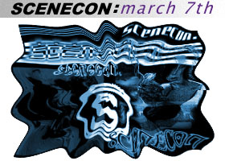

|  | Saturday March 7th was the first SceneCon, a monthly meet organized by nd to bring scene folks face to face, in New Jersey. The con was less than successful. Cgeeee was kind enough to speak about the experience... |
|
Here's what the scenecon website says: The idea of having scenecon came from bay and nd's thought of pursuing a monthly meet for NJ residents... focusing strongly on the ansi/lit/hirez/demo scenes... The whole idea is getting people together to just do stuff, and no conference will follow a certain agenda, the Con is what you make of it. |
| [scenelink]
Why did you attend?
[cgeeee] Well, I heard it would be the bomb, and I was going to NY anyways so I figured I'd go. [scenelink] What happened at the scenecon? [cgeeee] IT WAS SO MUCH FUN!@#!@ It was the best time of my life! Of course... by now you realize, I am being sarcastic. [scenelink] Yes, it had occurred to me... what went on at the con? [cgeeee] Well, the truth is that no one besides me and remorse's crew showed up. [cgeeee] I didn't actually KNOW they were there till 5 mins to 5:00 and I left at 5:00. Mainly, we bitched:) [scenelink] About? [cgeeee] About nd... he didn't reply to any of our pages and he didn't show up. Neither did anyone else. I'm extremely disappointed, he could have at least showed up. [scenelink] Do you know why he didn't? [cgeeee] Yes, because he couldn't get a RIDE TO HIS OWN CON [scenelink] Has anyone talked to him? [cgeeee] He was in #ansi, he was just bitching that he couldn't get a ride to scenecon. I dunno, I think there was a lot of deception on his part. I'm pretty pissed... he goofed, and didn't admit to it. [scenelink] Will there be another scene con? [cgeeee] Yes... but that one will also be canceled... [scenelink] What *should* have happened at the con? [cgeeee] Lunch and scene is good... but if you can HACK INTO GOVERNMENT FILES while at the con, that's cool too:) Its a place for people in the scene to get together/meet/have fun... which obviously didn't happen at scenecon. [scenelink] Why do you think no one showed up for this con? [cgeeee] Because nd is a putz, I am mad... [scenelink] How do you think it could have been organized better? [cgeeee] Well, nd coulda gotten a real ride and not depended on a crackhead... like deadpool. [scenelink] Even if nd had been there, it would have been 4 people. Would that have been a successful con? [cgeeee] No way. It woulda sucked, but at least it wouldn't be his fault. He couldn't control such circumstances BUT he didn't even freaking show up to his own con. [scenelink] Do you think enough people knew about the con? [cgeeee] Everyone knew scenecon was going down. I woulda cut him some slack... if he ACTUALLY SHOWED UP but he didn't even show up so now I can blame whatever I want on him because he didn't take responsibility. [scenelink] Closing comments? [cgeeee] Cons can be cool, but don't do what nd did:) |